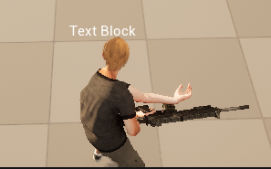
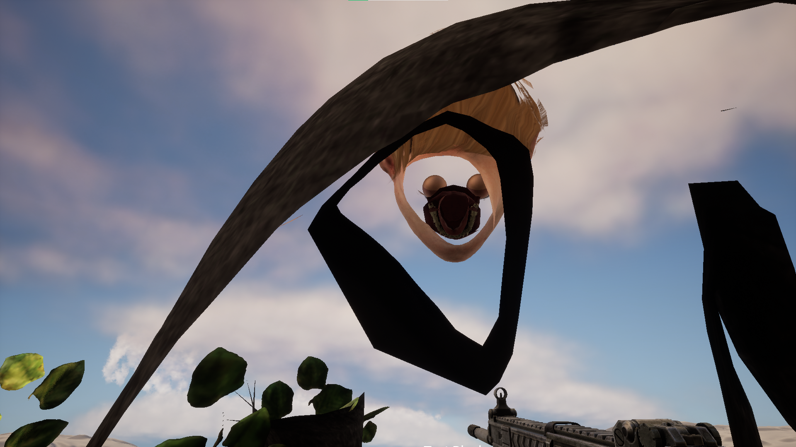
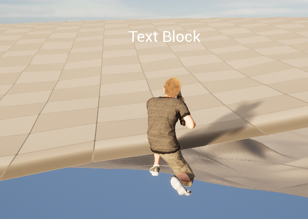

Bug #1
Hand won't point for the right direction while holding a weapon
Bug #2
Players would fall through the ground after being eliminated
Bug #3
Players can look inside their character in certain places and angles
Bug #4
Not exactly a bug, but players can go to the edge of the map and seem as if they are floating off the map.
